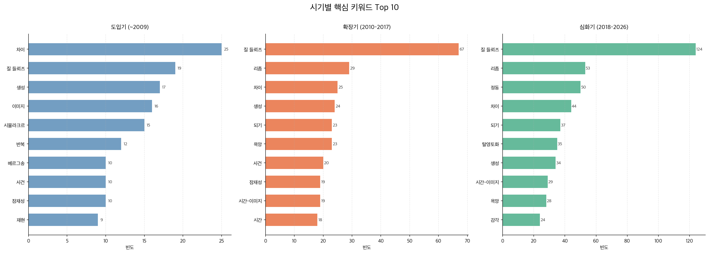
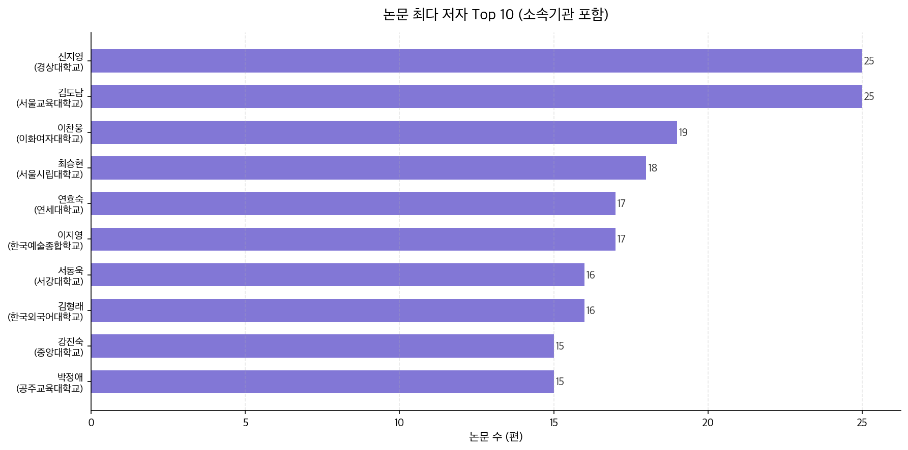

국내 들뢰즈 연구 지형도
KCI 데이터 기반 계량서지학적 분석 · 1995–2026
검색어: 들뢰즈(Deleuze) | 수집: 2026년 4월 | 이정민 · 234626 · 철학과
📋 데이터 개요
📈 연구 흐름
🗺 연구 지형
🏆 피인용 TOP 10
1,999
최종 유효 논문 수
32년
분석 기간 (1995–2026)
159편
2025년 역대 최다
87회
최고 피인용 횟수
2.60%
키워드 결측률
5.95%
초록 결측률
시기별 논문 분포
3단계 연구 궤적
제1기 이론 도입기 (~2009)
303편
#차이 #시뮬라크르 #잠재성
플라톤적 재현 체계에 맞서는 존재론적 개념 정초
제2기 학제적 확장기 (2010–2017)
686편
#리좀 #되기 #욕망
교육학·영화학·예술비평으로 개념 확산
제3기 실천적 심화기 (2018–현재)
1,010편
#정동 #탈영토화 #리토르넬로
전체의 50.5% · 윤리·정치적 실천으로 전회
연도별 논문 발행 추이 (1995–2025)
핵심 키워드 빈도
정동
3기
50회
리좀
2기
29회
차이
1기
25회
되기
2기
23회
욕망
2기
23회
감각
3기
24회
시뮬라크르
1기
15회
시기별 키워드 히트맵

패널 A — 다작 저자와 영향력 저자 비교
가장 많이 쓴
다작 저자(철학)
와 실제 가장 많이 인용된
영향력 저자(교육학)
가 완전히 다르게 나타남.
교육학의 압도적 영향력
확인.
최다 논문 저자 (다작)
①
김도남
25편
②
신지영
25편
③
이찬웅
19편
누적 피인용 (영향력)
①
김재춘(교육)
260회
②
배지현(교육)
229회
③
김은주
162회
패널 A — 저자 네트워크

이론과 실천의 양대 산맥
이론적 심화 그룹(신지영·이찬웅·서동욱)과 교육·실천 그룹(김도남·박정애)이 명확한 양대 산맥을 형성. 전자는 철학 단독 저술, 후자는 학제간 공저 비율이 높음.
패널 B — 주제 분야별 분포
패널 B — 학제 관점 해석
철학 (321편, 16.1%)
수위를 점하지만 단독 과반에 미치지 못함. 들뢰즈가 철학의 경계를 넘어선 증거.
교육학 (103편)
피인용 TOP 10 중 3편 교육학. 들뢰즈의 '배움론'이 가장 강력하게 작동한 분야.
건축공학 (27편)
이공계열에서의 이례적 침투. '접힘(fold)'·'리좀'이 설계 언어로 전용된 결과.
피인용 TOP 10 중
순수 철학 논문은 단 1편(10위)
. 나머지 9편은 교육학·지리학·문화연구·사회이론에서 생산. 들뢰즈의 영향력은
철학 밖
에서 더 크게 발휘되고 있다.
피인용 횟수 TOP 10 논문 (KCI 전수 분석)
피인용 분야 분포